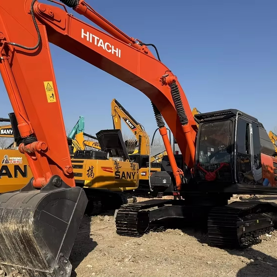

Refurbished Hitachi Zaxis 240 Excavator
The Hitachi Zaxis 240 Excavator is a highly versatile and durable machine designed for demanding construction, excavation, and material handling projects. Known for its impressive hydraulic system, fuel-efficient engine, and precise control, the Zaxis 240 offers exceptional performance in a variety of applications, including trenching, grading, lifting, and digging. A refurbished Zaxis 240 provides the same high-quality performance as a new unit but at a significantly lower cost, making it an excellent investment for contractors and businesses looking to maximize their equipment budget.
Honestly, it's almost impossible to buy a brand new excavator from China. They either don't exist or are made in China. If a Chinese seller tells you their Caterpillar/Komatsu/Volvo/Kobelco/Hitachi is brand new, they're lying. Therefore, a refurbished excavator is your best bet.

Here are the detailed specifications for a refurbished Hitachi Zaxis 240 excavator (ZX240LC-5G or ZX240-3):
Operating Weight and Dimensions
- Operating Weight: ~22,400–24,000 kg
- Transport Length: ~9.68 meters
- Transport Width: ~2.5 meters
- Transport Height: ~3.15 meters
- Tail Swing Radius: ~3.5 meters
- Track Width: 550–600 mm standard
- Undercarriage: Long carriage (LC) configuration
Engine and Powertrain
- Engine Model: Isuzu AH-4HK1X (Tier 2 or Tier 3 compliant)
- Rated Power Output: ~132–140 kW (177–188 hp) @ 2,000 rpm
- Fuel Tank Capacity: ~400 liters
- Travel Speed: ~5.5 km/h
- Swing Speed: ~11 rpm
- Drive Type: Hydrostatic with planetary final drives
Hydraulic System
- Main Pump Type: Dual axial piston pumps with HIOS III hydraulic system
- Flow Rate: ~2 × 270–300 L/min
- System Pressure: Up to 34.3 MPa
- Hydraulic Oil Capacity: ~300–350 liters
- Efficiency Features:
- Boom regenerative circuit
- Swing priority valve
- Auto hydraulic warm-up
- ECO mode for fuel savings
Performance Metrics
- Bucket Capacity: ~1.0 m³ (SAE heaped)
- Max Digging Depth: ~6.5 meters
- Max Reach (Horizontal): ~10.5 meters
- Max Dump Height: ~6.8 meters
- Bucket Digging Force: ~151 kN
- Arm Digging Force: ~110–130 kN
Cab and Operator Features
- Cab Type: ROPS/FOPS certified
- Display: LCD monitor with diagnostics and ECO gauge
- Controls: Pilot-operated joysticks with auxiliary hydraulic circuit
- Comfort: Adjustable seat, HVAC, low-noise cab
- Visibility: Wide glass area, rear-view camera, LED work lights
Attachments Compatibility
- Standard Bucket: ~1.0 m³
- Optional Tools: Hydraulic breaker, demolition shear, ripper, compactor
- Quick Coupler: Hydraulic or manual quick hitch
Refurbishment Scope
Refurbished ZX240 units typically include:
- Engine Overhaul: Turbocharger, injectors, cooling system
- Hydraulic Restoration: Pump recalibration, valve block testing, hose replacement
- Electrical Diagnostics: Monitor, sensors, wiring harness
- Cab Reconditioning: Seat, joysticks, HVAC, repainting
- Structural Repairs: Boom/bucket welding, bushing replacement, undercarriage rebuild
Overview of the Hitachi Zaxis 240 Excavator
The Hitachi Zaxis 240 is a mid-sized, tracked hydraulic excavator that offers a balance of power, fuel efficiency, and precision. Designed to excel in tough working conditions, this excavator is ideal for both heavy-duty applications and projects requiring fine control. Whether it’s digging deep trenches, lifting heavy materials, or grading a construction site, the Zaxis 240 delivers excellent productivity and reliability.
A refurbished Zaxis 240 undergoes a comprehensive reconditioning process, where all worn-out components are replaced with genuine Hitachi parts. This ensures that the machine is restored to its original performance standards, offering significant cost savings compared to a new unit while still providing the same level of efficiency and durability.
Key Specifications of the Hitachi Zaxis 240 Excavator
The Zaxis 240 is built to handle a variety of heavy-duty tasks with power, precision, and efficiency. Here are the key specifications:
-
Operating Weight: Approximately 24,000 - 26,000 kg (52,910 - 57,320 lbs)
-
Engine Power: 150 hp (112 kW)
-
Max Digging Depth: Up to 6.3 meters (20.7 feet)
-
Maximum Reach: 9.2 meters (30.2 feet)
-
Bucket Capacity: Typically 1.0 - 1.3 cubic meters (35 - 46 cubic feet)
-
Fuel Tank Capacity: Around 350 - 450 liters (92 - 119 gallons)
-
Travel Speed: Up to 5.5 km/h (3.4 mph)
These specifications make the Zaxis 240 a highly capable excavator for a wide range of tasks. Its fuel-efficient engine helps reduce operational costs, and its hydraulic system delivers the power required to perform heavy-duty tasks quickly and efficiently.
Performance and Efficiency of the Zaxis 240
The Hitachi Zaxis 240 is engineered to deliver excellent performance and fuel efficiency, making it a great choice for businesses looking to reduce costs while increasing productivity. With its advanced hydraulics and powerful engine, the Zaxis 240 is built for demanding tasks that require both power and precision.
Performance Highlights:
-
Efficient Hydraulic System: The Zaxis 240 is equipped with an advanced hydraulic system that ensures smooth and precise control over the boom, arm, and bucket. This allows operators to perform a variety of tasks with high productivity and minimal downtime.
-
Fuel Efficiency: One of the key benefits of the Zaxis 240 is its fuel-efficient engine. Designed to offer strong power without excessive fuel consumption, the Zaxis 240 helps businesses reduce fuel costs while maintaining excellent performance.
-
Powerful Digging and Lifting: The Zaxis 240 is capable of handling tough excavation and material handling tasks with ease. It offers impressive digging depth and reach, allowing operators to tackle deep trenching, material lifting, and other demanding tasks with confidence.
-
Precise and Responsive Control: The Zaxis 240 offers excellent control for operators, even in tight spaces or when performing delicate tasks. Its responsive controls and smooth operation make it easy to handle precise work with accuracy.
Durability and Longevity of the Zaxis 240
The Hitachi Zaxis 240 is built to last, providing long-term reliability even in harsh working conditions. With its durable components and well-engineered design, this excavator can withstand the rigors of demanding job sites while maintaining consistent performance.
Durability Features:
-
Heavy-Duty Undercarriage: The Zaxis 240 features a strong and durable undercarriage designed to handle rough terrain and heavy workloads. The tracks, rollers, and sprockets are built for extended wear, ensuring that the machine operates smoothly even in challenging conditions.
-
Reliable Engine: The Zaxis 240 is powered by a reliable engine that is designed for high performance and longevity. With proper maintenance, the engine can provide thousands of hours of service, making it a great investment for businesses looking for long-term reliability.
-
Robust Hydraulic System: The hydraulic system of the Zaxis 240 is engineered for durability and high performance. Designed to perform under high pressure, the hydraulic components are built to last, reducing downtime and ensuring the machine can handle tough tasks with ease.
Comfort and Safety of the Zaxis 240
Operator comfort and safety are integral parts of the Zaxis 240 design. The spacious cabin, reduced noise levels, and safety features ensure that operators can work comfortably and securely throughout their shifts.
Comfort and Safety Features:
-
Spacious Operator Cabin: The Zaxis 240 features a large, ergonomically designed cabin with adjustable seating and user-friendly controls. The cabin offers great visibility of the work area, which helps improve both operator comfort and job site safety.
-
Noise and Vibration Reduction: The cabin is designed to reduce noise and vibration, which helps reduce operator fatigue during long shifts. This feature ensures that the operator can maintain focus and work efficiently, even in noisy environments.
-
Safety Features: The Zaxis 240 comes equipped with safety features such as Roll Over Protection (ROPS) and Falling Object Protection (FOPS) to protect the operator in hazardous conditions. The machine’s stable design and low center of gravity also enhance its safety when working on uneven terrain.
Versatility and Attachments for the Zaxis 240
The Hitachi Zaxis 240 is highly versatile, capable of performing a variety of tasks with the right attachments. Whether you need to dig, lift, grade, or demolish, the Zaxis 240 can be equipped with the necessary tools to handle the job.
Common Attachments for the Zaxis 240:
-
Buckets: The Zaxis 240 can be fitted with a range of bucket attachments, including general-purpose, heavy-duty, and grading buckets. These attachments typically range from 1.0 to 1.3 cubic meters (35 - 46 cubic feet) in capacity, making them ideal for digging, material handling, and grading.
-
Hydraulic Breakers: For demolition work, the Zaxis 240 can be equipped with hydraulic breakers. These allow the machine to break through concrete, rock, and other hard materials with ease.
-
Augers: Auger attachments are ideal for drilling precise holes for foundations, posts, or other applications requiring deep, narrow holes. The Zaxis 240 can be fitted with augers for these tasks.
-
Grapples: For material handling, the Zaxis 240 can be equipped with grapple attachments, which are perfect for lifting and transporting heavy materials like logs, scrap metal, and debris.
-
Quick Couplers: Quick couplers enable operators to easily swap between different attachments, reducing downtime and improving productivity.
Benefits of Purchasing a Refurbished Hitachi Zaxis 240 Excavator
Purchasing a refurbished Zaxis 240 offers several advantages over buying a new machine, particularly for businesses looking to save on equipment costs.
Key Benefits:
-
Cost Savings: Refurbished Zaxis 240 excavators are much more affordable than new models. By purchasing a refurbished unit, businesses can obtain a machine that operates like new but at a significantly lower price.
-
Thorough Reconditioning: Refurbished Zaxis 240 excavators undergo a thorough reconditioning process, where all worn-out components are replaced with genuine Hitachi parts. This ensures that the machine operates at peak performance and provides years of reliable service.
-
Warranty: Many refurbished units come with a warranty, offering peace of mind for buyers in case of unexpected mechanical issues. The warranty ensures that the machine will continue to perform well after purchase.
-
Environmental Benefits: Purchasing refurbished equipment is an environmentally responsible choice. It helps reduce waste and extends the lifespan of existing machinery, contributing to sustainability in the heavy equipment industry.
Maintenance Tips for the Hitachi Zaxis 240 Excavator
To ensure that the Zaxis 240 continues to perform efficiently, regular maintenance is essential. By staying on top of routine checks and addressing issues early, businesses can prevent costly repairs and extend the life of the machine.
Maintenance Recommendations:
-
Engine Maintenance: Regularly check and replace engine oil, air filters, and coolant levels to ensure optimal engine performance and prevent overheating.
-
Hydraulic System: Inspect hydraulic hoses for leaks and replace hydraulic filters as necessary. Keeping the hydraulic system clean and well-maintained ensures smooth operation.
-
Undercarriage: Inspect the undercarriage for signs of wear, especially the tracks, sprockets, and rollers. Timely replacement of damaged components helps maintain stability and prolong the life of the machine.
-
Attachments: Regularly inspect attachments such as buckets, grapples, and augers for wear and tear. Replace or repair damaged parts to maintain performance.
Conclusion
The Hitachi Zaxis 240 Excavator is a powerful and reliable machine that provides excellent performance, fuel efficiency, and durability for a wide range of applications. Purchasing a refurbished Zaxis 240 allows businesses to save on equipment costs while still receiving a high-performing machine. With proper maintenance, this excavator can serve for many years, making it a valuable addition to any fleet. Whether you're involved in excavation, grading, or material handling, the Zaxis 240 is a great choice for efficient and cost-effective heavy equipment.
Our Commitment
- 2 years / 4000 hours warranty.
- EPA certified.
- No sweatshop labor.
Contacts

- [email protected]
- Youtube Instagram Facebook
- Navigation: G206 (Sishu Bridge) in Changfeng County, Hefei City, Anhui Province, 200 meters north to the east